El estilo de página es el conjunto de características que determinan cómo se verá el documento en el papel o en la pantalla. No se trata del texto, sino de todo lo que lo rodea: el tamaño de la hoja, los márgenes, la orientación, los encabezados y pies de página, o incluso si el texto se organiza en una o varias columnas.
En Word estas opciones se encuentran en la pestaña Diseño de página, mientras que en Writer se configuran desde el menú Formato → Página.
Márgenes: Uno de los aspectos más importantes son los márgenes, que son los espacios en blanco que rodean al texto. Gracias a ellos el contenido no queda pegado a los bordes de la hoja y resulta más cómodo de leer. De manera predeterminada, Writer suele aplicar 2,5 cm en la parte superior e inferior y 3 cm en los lados derecho e izquierdo.
Orientación: La más común es la vertical, que usamos en la mayoría de documentos, aunque en algunas ocasiones puede resultar más útil la orientación horizontal, por ejemplo, para incluir tablas amplias o gráficos grandes.
Encabezado y pie de página: permiten añadir información que se repetirá en todas las hojas del documento. En el encabezado se puede colocar el título del trabajo o el nombre del autor, mientras que en el pie de página es habitual incluir la numeración de las páginas o alguna nota breve.
Tamaño: siendo el formato A4 el más utilizado en trabajos académicos. Otros tamaños, como A3, se reservan para documentos más grandes o con fines específicos. En este mismo apartado pueden configurarse opciones de impresión como la doble cara o el modo borrador.
Columnas:ofrece la posibilidad de dividir el texto en columnas, lo que resulta muy útil cuando queremos dar un formato parecido al de los periódicos o revistas. Para activarlo debemos ir a Diseño de página → Columnas.
Saltos: sirven para indicar al programa dónde debe comenzar una nueva página o una parte diferenciada del texto, algo muy práctico cuando elaboramos trabajos largos organizados en capítulos.
Sangrias: na sangría es el espacio que se deja al inicio de un párrafo antes de empezar a escribir. Sirve para diferenciar mejor un párrafo de otro y dar un aspecto más ordenado al texto. En Writer se pueden configurar diferentes tipos de sangría: una sangría de primera línea, que aplica solo al comienzo de cada párrafo, o una sangría francesa, que deja en la misma línea todas las frases salvo la primera. Estas opciones se encuentran en Formato → Párrafo → Sangrías y espaciado.
Los estilos o formatos de texto determinan la apariencia de las letras dentro del documento. Afectan directamente al contenido escrito y permiten destacar información o mejorar la legibilidad. Incluyen aspectos como el tipo y tamaño de fuente, el color, el uso de negrita, cursiva o subrayado, y otros efectos aplicados sobre el propio texto.
En Word y Writer estas opciones se encuentran en el menú Formato... Texto... y destacamos:
Negrita, cursiva y subrayado: Son los formatos más utilizados para resaltar partes del texto. La negrita se usa para destacar conceptos clave, la cursiva para títulos o palabras en otro idioma, y el subrayado para llamar la atención sobre términos o frases importantes.
Color del texto: Permite cambiar el tono de las letras para destacar ideas o diferenciar secciones. Se accede desde el botón Color de texto, representado con una “A” subrayada por una línea de color.
Color de fondo: El botón Color de fondo o Color de resalte aplica un color detrás del texto, como si se usara un rotulador, ayudando a resaltar partes concretas del documento.
Tipo y tamaño de letra: Desde la barra de herramientas se puede elegir el tipo de fuente (por ejemplo, Arial, Times New Roman o Calibri) y su tamaño. Estas opciones influyen directamente en la legibilidad y el estilo general del texto.
Estilo de fuente y efectos: Además de los básicos, se pueden aplicar efectos como tachado, superíndice, subíndice o sombreado para dar distintos matices visuales.
Hipervínculos (URL): Writer permite insertar enlaces a páginas web o a otras partes del documento. Se puede hacer desde el menú Insertar → Hipervínculo, o bien con el atajo Ctrl + K. El texto enlazado suele aparecer subrayado y en color azul por defecto.
Buscamos información en Wikipedia sobre algún inventor, por ejemplo, Hedy Lamarr.
Seleccionamos el primera sección del artículo de texto de Wikipedia y lo copiamos sin formato en nuestro documento. (pasos ya vistos en AA2.6).
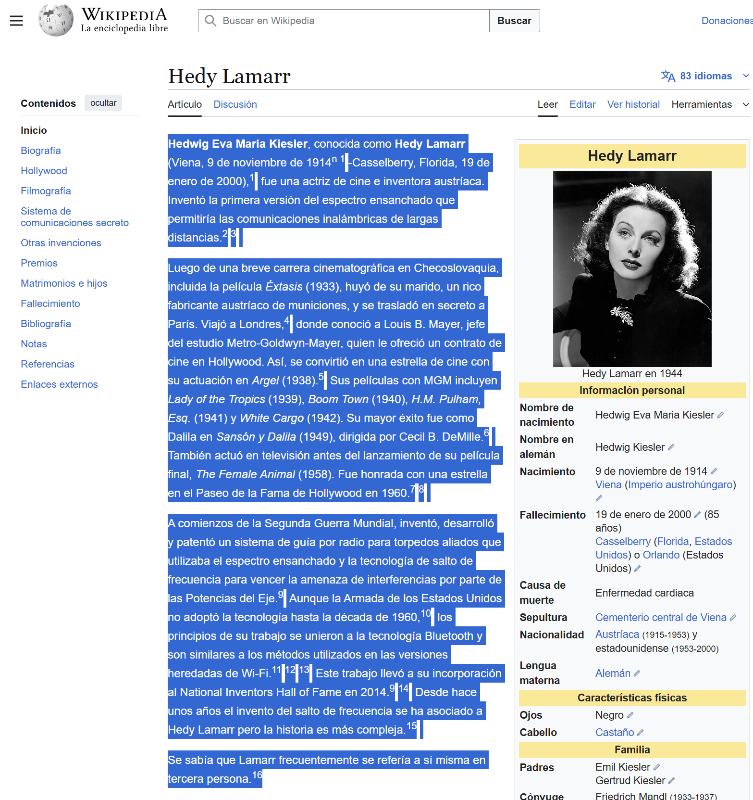
Primera sección del artículo de wikipedia
Resaltamos en negrita "Hedwig Eva Maria Kiesler" y "Hedy Lamarr"
Se puede seleccionar el texto situando el cursor al comienzo del texto y manteniendo pulsada la tecla shift , pinchar con el ratón al final del texto que queremos cambiar. Una vez seleccionado el texto, pinchamos con el ratón en la herramienta para cambiar el texto a negrita .
O bien podemos elegir en el menú Formato... Texto... Negrita
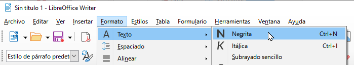
Menú formato texto
Resaltamos en cursiva el nombre de las películas: Lady of the Tropics, Boom Town, H.M. Pulham_Esq , White Cargo, y Sansón y Dalila
Se puede seleccionar el texto situando el cursor al comienzo del texto y manteniendo pulsada la tecla shift , pinchar con el ratón al final del texto que queremos cambiar. Una vez seleccionado el texto, pinchamos con el ratón en la herramienta para cambiar el texto a cursiva 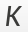.
O bien podemos elegir en el menú Formato... Texto... Cursiva
Cambiar el color de texto a rojo de los nombres de las películas.
Subrayar en amarillo la última película por ser la más famosa.
Cambiar el tipo de letra a Comic Sans MS y tamaño 14pt.
Poner superindice 1 junto al año de defunción.
Para dar el formato necesario al texto vamos a utilizar los siguientes botones de la barra de herramientas.
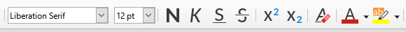
Barra herramientas
El botón 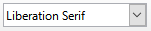 cambia el tipo de letra
El botón 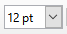 cambia el tamaño del texto en puntos (pt)
Da formato a cada texto para obtener el siguiente resultado final:
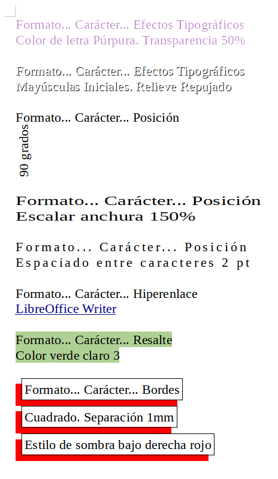
Resultado final ejercicio
Para dar el formato necesario al texto vamos a utilizar el menú Formato... Carácter...
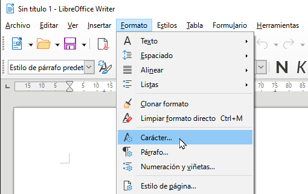
Menú formato
En la pestaña de Tipo de letra aparecerá la siguiente ventana.
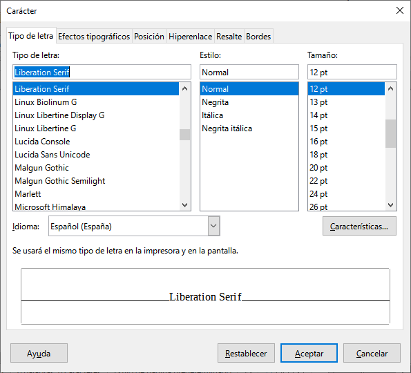
Tipo de letra
En esta ventana se puede elegir un tipo de letra, un estilo y un tamaño. Esta herramienta es igual a los botones de formato que ya hemos utilizado, con la ventaja de que ahora podemos ver en el recuadro inferior el formato elegido.
Otra pestaña de la ventana es la de Efectos tipográficos.
En esta ventana podemos seleccionar el color del texto escrito añadiendo la opción de establecer la transparencia del texto.
Otra opción del subrayado es el estilo de subrayado que se desea o incluso de tachado o suprarrayado.
Como podemos ver, las opciones son mucho más completas que las que tenemos en la barra de herramientas de formato.
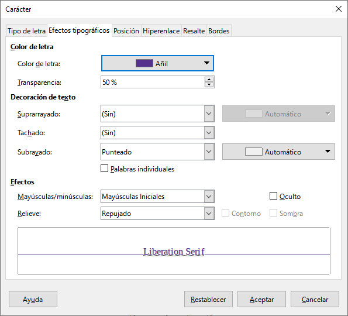
Efectos tipográficos
Para crear un hipervínculo a una página web debemos escribir la dirección de la web en la casilla URL. es.wikipedia.org/wiki/LibreOffice_Writer
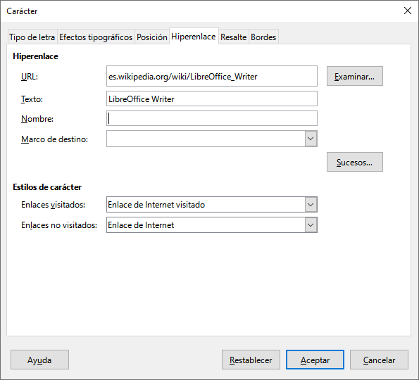
Efectos tipográficos
El formato de párrafo define cómo se organiza y presenta el texto en bloques. No cambia las letras en sí, sino la disposición del texto en la página: la alineación (izquierda, derecha, centrada o justificada), la sangría, el espaciado entre líneas o párrafos, y la forma en que se agrupan las oraciones para mantener una estructura clara y ordenada.
En Word y Writer estas opciones se encuentran en el menú Formato... Párrafo... y permiten ajustar la estructura visual del documento. Destacamos:
Alineación del texto: Determina cómo se distribuye el texto horizontalmente. Puede ser alineado a la izquierda (predeterminado), centrado (para títulos o frases destacadas), alineado a la derecha (para fechas o firmas) o justificado (para que el texto ocupe todo el ancho de la línea, como en los libros o periódicos).
Sangrías: Ajustan el espacio al inicio de cada párrafo o línea. La sangría de primera línea se usa habitualmente para separar visualmente párrafos en textos largos. También se puede aplicar sangría izquierda o derecha para desplazar el texto dentro de la página.
Espaciado entre líneas y párrafos: Controla la distancia vertical entre líneas dentro de un mismo párrafo o entre párrafos consecutivos. Un espaciado adecuado mejora la lectura y la presentación.
Interlineado: Define la separación entre las líneas de un mismo párrafo. Los valores más usados son sencillo, 1,5 líneas y doble.
Viñetas y numeración: Permiten organizar el texto en listas ordenadas o no ordenadas. Son muy útiles para esquemas, instrucciones o enumeraciones.
Bordes y sombreado: Writer y Word permiten añadir bordes alrededor del párrafo o aplicar un sombreado de fondo para destacarlo dentro del documento.
Tabulaciones: Sirven para alinear texto en columnas dentro del mismo párrafo, muy útiles para crear listas con datos o precios sin necesidad de usar tablas.
Da formato a cada texto para obtener el siguiente resultado final:
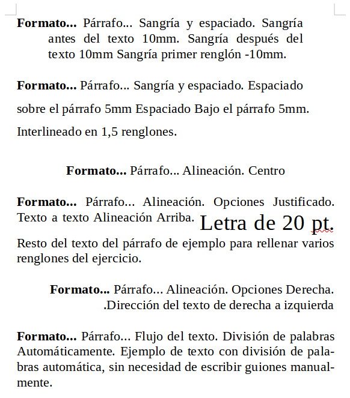
Resultado final ejercicio
Para dar el formato necesario al texto vamos a utilizar el menú Formato... Párrafo...
En la pestaña de Sangría y espaciado aparecerá la siguiente ventana.
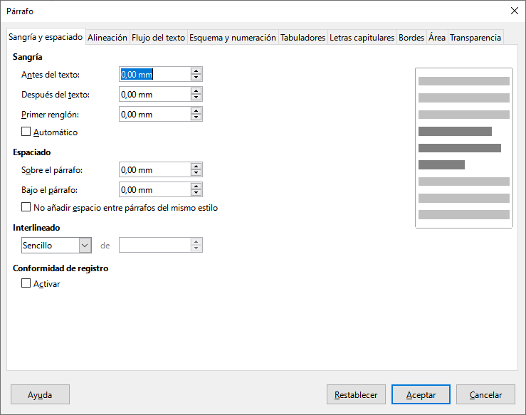
Pestaña de Sangría y espaciado
En esta ventana se puede elegir el espacio de sangría (espacio entre el borde y el texto), el espacio antes y después del párrafo o el espacio entre líneas de un párrafo (interlineado).
Otra forma de dar formato de párrafo es utilizar algunos botones de la barra de herramientas.
Justifica el texto por ambos lados.
Justifica el texto a la izquierda.
Justifica el texto a la derecha.
Centra el texto en medio de la página.
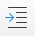 Aumenta la sangría del texto (desplaza a la derecha).
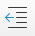 Reduce la sangría del texto (desplaza a la izquierda).
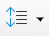 Aumenta o disminuye el interlineado (espacio entre líneas del párrafo).
Podemos ver tres palabras que son los encabezados de las tres columnas que vamos a completar. Para ver los tabuladores de las columnas abrimos el menú Formato... Párrafo... y elegimos la pestaña de Tabuladores. Veremos la siguiente ventana.
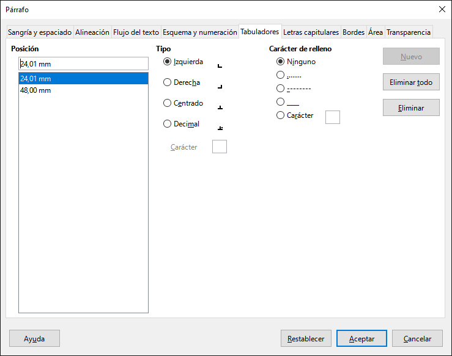
Pestaña tabulaciones
Los tabuladores ya están establecidos en 24mm y 48mm que corresponde a la segunda y tercera columnas. Los tabuladores también se pueden ver en la regla de Writer.
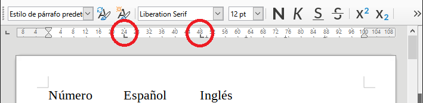
Tabuladores en la regla del Writer
A continuación terminamos el ejercicio escribiendo el texto que falta como se muestra en la siguiente imagen. Para separar las columnas pulsaremos la tecla de tabulador 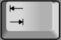
Las palabras en inglés aparecen con una línea roja debajo porque el corrector ortográfico no las reconoce como palabras españolas.
Por último vamos a mover las columnas de texto moviendo con el ratón las marcas de tabulación hasta las posiciones 32 y 64. Primero seleccionamos todo el texto a mover.
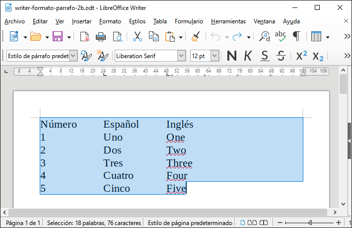
Ahora movemos las marcas en la regla.
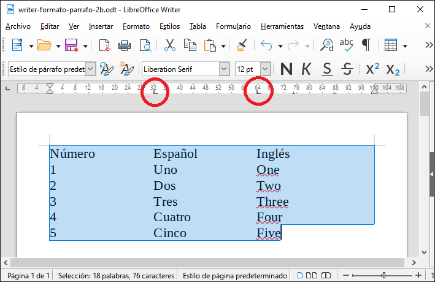
Todo el texto de las columnas se moverá para coincidir con las marcas de tabulación.
Da formato a cada texto para obtener el siguiente resultado final:
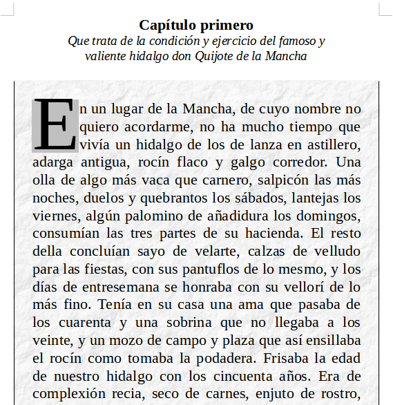
Resultado final ejercicio
Primero seleccionamos el texto de "Capítulo primero" y lo cambiamos a letra negrita centrada con los botones y .
A continuación seleccionamos la siguiente frase y la cambiamos a texto en itálica centrada con los botones y .
Ahora, con el texto seleccionado, cambiaremos las sangrías derecha e izquierda moviendo las marcas de la regla a la posición 12 mm y a la posición 88 mm como puede verse en la imagen adjunta.
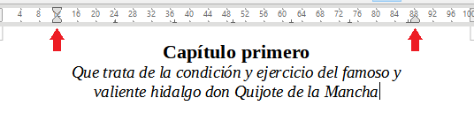
Cambio sangrias
6 .A continuación vamos a seleccionar el siguiente párrafo de texto y seleccionamos el menú Formato... Párrafo... y en la pestaña de Letras capitulares clicamos la opción de Mostrar letras capitulares. Esta opción hará mucho más grande la primera letra del párrafo.
En la pestaña de Bordes seleccionamos en Preajustes los bordes derecho e izquierdo. En Separación ajustamos todos a 5,0 mm.
En la pestaña de Área seleccionamos el botón Mapa de bits y el mapa de bits de papel arrugado como imagen de fondo del párrafo.
Por último en la pestaña de Transparencia seleccionamos la transparencia al 70% para que la imagen de fondo se vea más clara.
Una vez hecho esto, podemos pinchar en el botón de abajo Aceptar y veremos el texto como muestra la imagen del inicio.
En el texto podemos ver tres listados distintos a los que vamos a dar formato.
Seleccionamos las tres primeras líneas de texto y pulsamos el botón de lista numerada 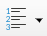 o presionamos la tecla de función F12. El resultado será el siguiente:
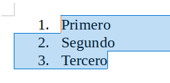
Resultado
A continuación seleccionamos las tres líneas siguientes y pulsamos el botón de lista con viñetas 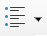. El resultado será el siguiente:
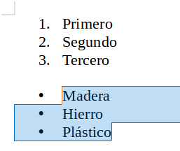
Resultado
Por último vamos a dar formato a las últimas líneas de texto con dos niveles distintos de viñetas. Comenzamos por seleccionar todas las últimas líneas de texto y pulsamos a continuación el botón de lista con viñetas . El resultado será el siguiente.
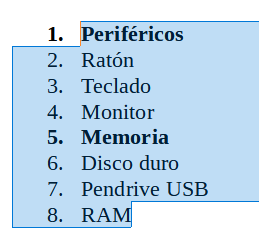
Resultado
Continuamos seleccionando los elementos de las filas 2 a 4 y pulsamos el botón de descender un nivel 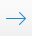, con lo que la lista cambiará como puede verse a continuación.
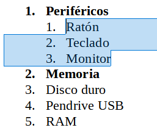
Resultado
Por último seleccionamos las tres últimas líneas y volvemos a pulsar el botón de descender un nivel , con lo que la lista cambiará como puede verse a continuación.
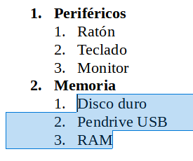
Resultado
Una vez que tenemos la tercera lista numerada con dos niveles, vamos a cambiar la numeración del segundo nivel a letras en vez de números. Primero seleccionamos otra vez las líneas 1 a 3 y en el menú de Formato... Numeración y viñetas... en la pestaña de numeración escogemos las letras a) b) c).
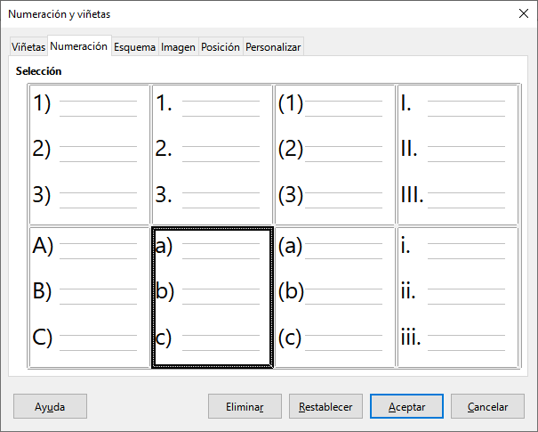
Pestaña
Aplicamos el mismo formato a las tres últimas líneas y el texto completo quedará como se muestra a continuación.

 , pinchar con el ratón al final del texto que queremos cambiar. Una vez seleccionado el texto, pinchamos con el ratón en la herramienta para cambiar el texto a negrita .
, pinchar con el ratón al final del texto que queremos cambiar. Una vez seleccionado el texto, pinchamos con el ratón en la herramienta para cambiar el texto a negrita . Justifica el texto por ambos lados.
Justifica el texto por ambos lados. Centra el texto en medio de la página.
Centra el texto en medio de la página.